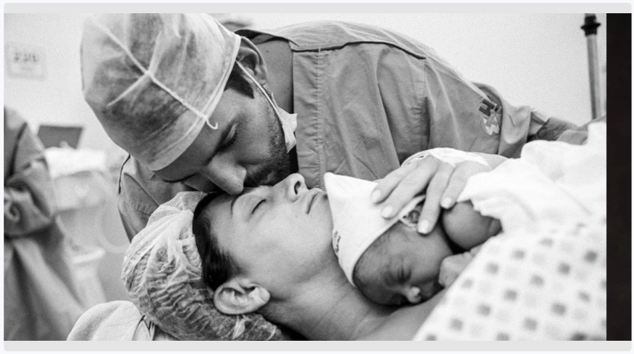

Felipe Pezzoni fala sobre mistura de ritmos em novo DVD da Banda Eva: ‘A gente não quis se limitar’
Projeto foi lançado no dia 22 de julho e já pode ser acessado no Globoplay
OUVIR
IMPRIMIR
Compartilhar
Pagode e reggae, ritmos diferentes do tradicional axé da Banda Eva, mas que fazem
parte
do novo DVD do grupo,
lançado no último dia 22 de julho. “Sem Filtro” tem a participação de Maneva, Babado Novo e a ilha
paradisíaca de Fernando de Noronha como cenário.
A essência é sem filtro porque a gente não quis se limitar a ‘isso é ou não axé’. Quisemos fazer
música
Vocalista Felipe Pezzoni
Foto: Reprodução.
Em entrevista ao Jornal Massa, o vocalista Felipe Pezzoni falou sobre as
inspirações, dificuldades e
bastidores do novo projeto. “A essência é sem filtro porque a gente não quis se limitar a ‘isso é ou
não
axé’. Quisemos fazer música”, explica, descrevendo a mistura de ritmos.
Em entrevista ao Jornal Massa, o vocalista Felipe Pezzoni falou sobre as
inspirações, dificuldades e
bastidores do novo projeto. “A essência é sem filtro porque a gente não quis se limitar a ‘isso é ou
não
axé’. Quisemos fazer música”, explica, descrevendo a mistura de ritmos.
“O som veio depois do que eu vi, tentei explicar o que aquele visual trazia
para
nós. Foi o visual que
trouxe
a sonoridade. O todo me deu de presente a trilha sonora”, diz Felipe.
A construção do repertório teve influência do cenário paradisíaco, o que não
deixou dúvidas na escolha do
local para a gravação. “No final do processo a gente entendeu que não fomos nós que escolhemos a
ilha,
foi
ela que nos escolheu. Quando terminou, falei: ‘não, tinha como não ser aqui'”, revela o artista.
Confira o repertório:
“Mina na Areia”, “Louca”, “Sem filtro” e regravações de singles da Banda Eva
compõem o novo álbum. Além
das músicas conhecidas pelo público, sucessos brasileiros como “Dona da Minha Cabeça”, de Geraldo
Azevedo, e “Lilás”, de Djavan, também entraram no repertório.
“Foi algo, realmente, de entregar a responsabilidade para o universo”, conta
Felipe sobre a criação das
canções. O cantor ainda explica que a escolha de “Talismã” em ritmo de reggae aconteceu de forma
natural.
ENTREVISTA COM FELIPE PEZZONI
1:23:45
“É uma música que veio na minha cabeça. Estava compondo, me veio o refrão e
pensei: ‘conheço ela de algum
lugar'”, afirma sobre a canção originalmente interpretada pela dupla sertaneja Leandro & Leonardo.
Outra composição que chama atenção é “Louca”. A música, que foge do habitual
axé, mistura o reggae e pop,
marcando um novo processo da banda, que vem buscando a conexão com outros ritmos, incluindo o samba.
CAPA DO ALBUM.PDF
10,53.mb
Ao ser perguntado sobre a união dos gêneros, Felipe explica: “Ao juntar
reggae e
samba temos o ‘samba
reggae’, e isso é a energia da Bahia, foi o que queríamos trazer. Tem a ligação, os nossos laços e
sangue com o axé”.
Dificuldades
Apesar de parecer uma escolha perfeita, a paisagem de Noronha causou certa
incerteza no cantor. Ele
explica que a dificuldade em levar materiais para a ilha fez com que pensasse que o projeto não
daria
certo.
“Eu não conseguia ver a viabilidade nisso porque é muito difícil produzir
alguma
coisa lá. Qualquer
coisa
que você faça na ilha é muito complicado, as coisas tem que chegar de navio”, diz.
Foi intuitivo, natural, as músicas foram aparecendo.
Não
tivemos muito tempo de preparação, mas o processo foi tão fluido que as músicas foram
pintando
Com curto tempo de produção, o músico conta que tudo teve que acontecer de
maneira orgânica para que
funcionasse bem, e que esse foi o maior diferencial do projeto. “Foi intuitivo, natural, as músicas
foram aparecendo. Não tivemos muito tempo de preparação, mas o processo foi tão fluido que as
músicas
foram pintando”, relembra.
Felipe conta que outra dificuldade foi ter passado um
tempo longe de casa por
causa das gravações.
“Antes
era um só, mas agora é a saudade de três filhos. É bem difícil a ausência, mas tudo é para eles.
Então
tentei otimizar meu tempo para estar mais com eles quando estava aqui”, afirma.

Foto: Reprodução.
leia também
Dj Zullu lança single com Pocah e anuncia primeiro EP ‘Pra Elas’
há 2 min
Dj Zullu lança single com Pocah e anuncia primeiro EP ‘Pra Elas’
há 2 min
Dj Zullu lança single com Pocah e anuncia primeiro EP ‘Pra Elas’
há 2 min
Dj Zullu lança single com Pocah e anuncia primeiro EP ‘Pra Elas’
há 2 min
Dj Zullu lança single com Pocah e anuncia primeiro EP ‘Pra Elas’